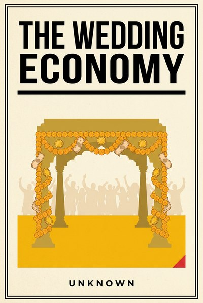

Library › Money & Finance
The Wedding Economy — Summary & Key Lessons

Inside the biggest industry no one counts: banquets, gold, borrowed glitter and the arithmetic of joy.
📖 OPEN THE FULL INTERACTIVE BREAKDOWN →🌐 Read it in Hindi, Hinglish, Gujarati, Tamil & 22 more languages — free, with audio.
💡 The Big Idea
The Indian wedding is among the largest economic events a household ever hosts, and the industry around it, banquets, jewellers, decorators, outfits, travel and gifts, runs on some of the sharpest commercial logic in the country, all hidden under rose petals. This book reads the wedding as an economy: demand that spikes on auspicious dates, deposits that finance entire vendor years, gold that functions as a family's accounting system, and status pressure that behaves exactly like inflation. The ten lessons are for anyone who sells anything, attends anything or is about to host anything: how peak-volume margins really work, why rentals beat ownership, and how to set a budget in writing before emotion sets it for you. The examples are real public business history, from jeweller frauds to airline surge pricing, read through the one event every family eventually runs.
🧠 The 10 Key Lessons
Lesson 1: The Guest List Is the Market
Chapter 1: Attendance as Asset
Wedding spending scales with the social graph, not with the couple: the list is a map of obligations, alliances and audiences, and every name on it carries a price band. Any business built on social events inherits this law: you are not selling to a buyer, you are selling to a network watching the buyer, which changes what value even means.
📖 Example: Banquet halls price by per-plate tiers and jewellers by display pieces for exactly the audience effect, and the tech world's launch events run the same physics: the guest list is the reach, the stage is the altar. Read the full example →
⚡ Do this: If you sell anything social, price your product by what the audience sees, not only what the user gets. Write down the visible version and the private version of your value.
Lesson 2: Gold Is the Accounting
Chapter 2: The Family Balance Sheet
Much of the gold at weddings is not adornment, it is accounting: portable, liquid, socially sanctioned savings moving from one household's books to another's. Read it correctly and the wedding reveals itself as a transfer of capital with rituals attached, which is why the metal trade's integrity matters so much and why its frauds are so devastating.
📖 Example: The Gitanjali and PNB frauds showed what happens when the metal's paper promises detach from the metal itself, and every household's quiet preference for physical gold over paper schemes is lived risk management, not superstition. Read the full example →
⚡ Do this: Audit what your family or business counts as 'savings'. Label each item: spending, insurance, or capital. Most surprises die when the labels are honest.
Lesson 3: Aspiration Has Seasons
Chapter 3: The Auspicious Calendar
Demand in this economy does not spread evenly; it clusters on auspicious dates, and whole industries plan their staffing, inventory and pricing around those windows. The lesson generalizes: every market has its muhurat hours, and the professional's edge is knowing the calendar better than the competition, then building capacity for the spike instead of being surprised by it.
📖 Example: Airlines and hotels surge on wedding-season dates, jewellers hire temporary staff for Diwali-to-peak quarters, and e-commerce invented entire festival sales to concentrate demand they could then serve at scale. Read the full example →
⚡ Do this: Chart your own demand by month for the last two years. Circle the peaks, and plan staffing, stock and pricing for the next one now, while it is still cheap to plan.
Lesson 4: The Banquet Margin
Chapter 4: Per-Plate Physics
Catering economics are the cleanest lesson in unit economics anywhere: the plate has a food cost, a labor cost, a rent-per-hour of the hall and a waste curve, and the margin only appears at volume. A small wedding is a different business than a big one, not a smaller version of the same one, and vendors who survive are ruthless about which volume they are built for.
📖 Example: Cloud kitchens and QSR chains rediscovered the per-plate discipline the banquet masters always had: contribution margin per unit decides survival, and the menu is engineered backward from it. Read the full example →
⚡ Do this: Recompute your unit economics at half and double your current volume. If the numbers die at either end, you now know which business you are actually in and which one to stop pretending to be.
Lesson 5: Borrowed Glitter
Chapter 5: The Rental Stack
The modern wedding is increasingly asset-light: outfits, jewellery, decor, even mandap structures are rented, used for a night and returned. Rental converts a capital expense into a one-night operating expense, which is exactly what depreciation-hating households and CFOs both need. Owning the lantern you light once a decade is balance-sheet sentimentality.
📖 Example: The wedding-rental boom in outfits and jewellery, and the parallel rise of furniture and appliance rentals in cities, both monetize the same insight: frequency of use, not sentiment, should decide ownership. Read the full example →
⚡ Do this: List what your household or business owns that it uses less than four times a year. Rent the next such need instead of buying it, and consider selling one idle asset this quarter.
Lesson 6: Status Inflation
Chapter 6: The Escalating Baseline
Wedding spending ratchets because every wedding becomes the new benchmark for the next audience, a textbook status treadmill with monetary policy nobody controls. The macro lesson is that social norms can inflate faster than salaries, and the personal lesson is to recognize a treadmill in time to step off one rung of it, deliberately and without apology.
📖 Example: Destination weddings moved from celebrity novelty to middle-class default in a generation, the same ratchet that turned first birthdays and honeymoons into industries, each rung financed by the previous rung's photograph. Read the full example →
⚡ Do this: Name one category where your spending is set by other people's expectations rather than your own use. Opt out of one rung this year, in writing, before the season recruits you.
Lesson 7: The Vendor Web
Chapter 7: Fifty Small Businesses, One Night
One wedding feeds dozens of interlinked small businesses, from mehendi artists to tent houses to the halwai's extra kadhai, most of whom know each other, recommend each other and schedule each other. It is a supply network built on relationships and reputation, and the family that manages it as a portfolio, not as a queue of vendors, gets both better prices and better nights.
📖 Example: The tent-house-to-caterer referral chains of every city, and the wedding-planner industry built on owning exactly this graph, prove the network is the product; the services are just its edges. Read the full example →
⚡ Do this: Build your vendor bench before you need it: for your three most likely big events, shortlist two names per role now, and do one small paid trial with one of them this year.
Lesson 8: Deposits Are Promises
Chapter 8: The Advance Economy
Deposits lock calendars, finance vendors' working capital and price the cancellation risk on both sides. The dance of advance, balance and forfeiture is a negotiation architecture every business can learn from: money upfront changes behavior, and the absence of it invites the chaos it deserves. Fair-but-firm beats generous-and-vague every season.
📖 Example: Every hotel, banquet and photographer runs on the same deposit spine, and the gig platforms that struggled with no-shows rediscovered the law the mandap knew first: skin in the game is the only reliable RSVP. Read the full example →
⚡ Do this: If you take bookings of any kind, set a written deposit policy this week: percentage, deadline, refund ladder. Publish it, enforce it once early, and watch no-shows fall.
Lesson 9: Emotion Is the Budget Killer
Chapter 9: The Number Before the Season
Wedding budgets are set by sentiment and discovered by invoice, which is why they detonate. The families that land well do one boring thing: they fix the number in writing, with the people who matter, before the first vendor meeting, and they treat every upgrade after that as a trade, not an addition. Emotion is a wonderful guest and a terrible treasurer.
📖 Example: The debt burdens that follow big fat weddings, and the personal-finance industry built around 'wedding loans', are the invoice trail of budgets that were never set, only felt. Read the full example →
⚡ Do this: Write your next event's number down now, share it with the one stakeholder who matters, and adopt the one-sentence rule: nothing is added unless something is removed.
Lesson 10: The Morning-After Market
Chapter 10: Anniversaries and Afterlives
The wedding is one night, but the market it creates runs for decades: anniversaries, festivals in the new household, gifting loops between families, and the quiet recommerce of everything bought for a single day. Businesses that see the afterlife of the event, not just the event, turn one sale into a subscription of occasions.
📖 Example: The resale trade in barely-used wedding outfits and decor, and the greeting-and-gifting industries that live off the calendar of a marriage for thirty years, both monetize the morning after. Read the full example →
⚡ Do this: Design one repeatable occasion product around your existing customers' calendars this quarter: a renewal, a reminder, a ritual. One line, one date, one year.
✅ 5-Step Action Plan
- Rewrite your value in its visible version and its private version, then price both.
- Label household and business 'savings' honestly: spending, insurance or capital.
- Plan for your demand peak now: staffing, stock and pricing, in that order.
- Set and share your next event's number in writing before the first vendor meeting.
- Design one occasion-product line with a date attached this quarter.
⚠️ When This Doesn't Work
This is a TheSmallBook Original: an in-house work published under the name Unknown. The wedding economy here is read through real public business history (jewellery frauds, banquet and rental markets, festival commerce), with no individual or community targeted; the customs described are treated with respect, and the arithmetic is meant to protect joy, not ration it.
💀 The Graveyard Proves It
💍 Gitanjali Gems — The Other Uncle in the PNB Fraud. Burn: Part of the ₹14,000 crore PNB hole. Read the full case study →
💬 Best Quotes from The Wedding Economy
- “A wedding is a household's IPO, and most families have never read the prospectus.”
- “Gold at a wedding is not jewellery. It is the family balance sheet walking around in public.”
- “Set the number before the season sets it for you.”
Interactive version: mark lessons as read, listen in your language, share quote cards.